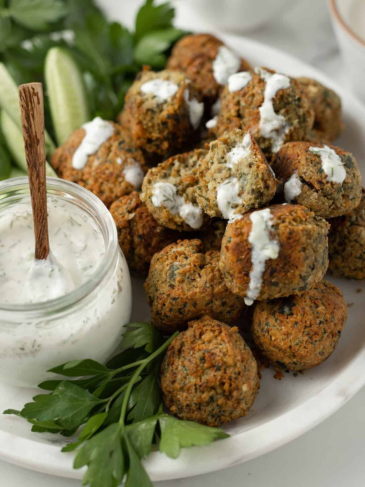
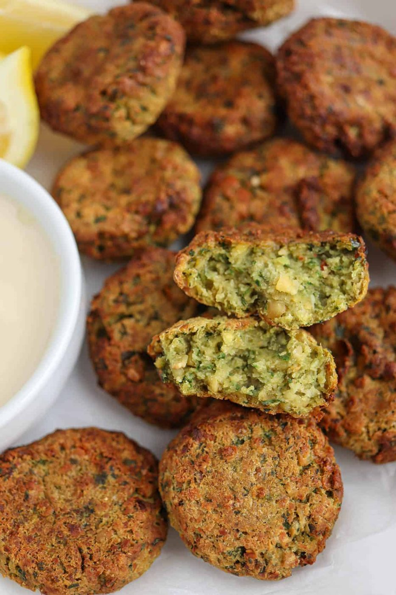
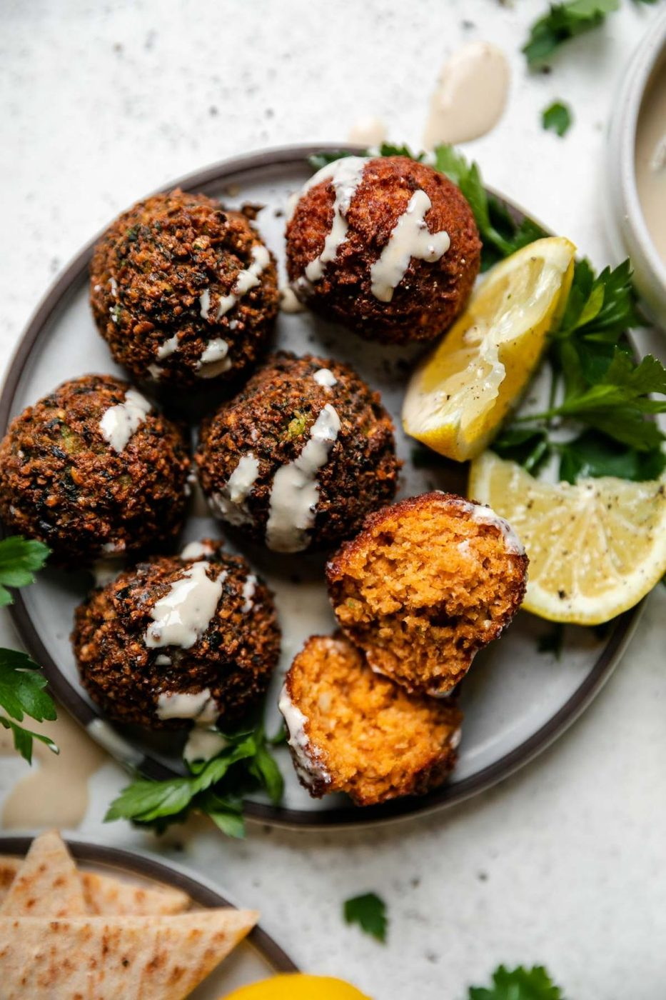
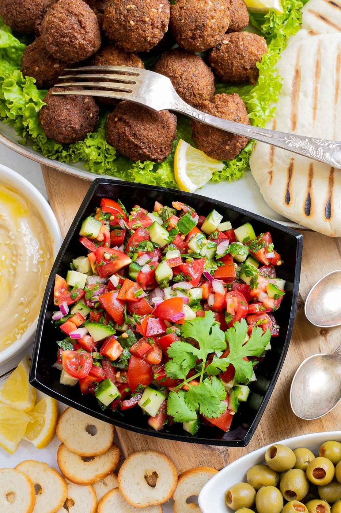
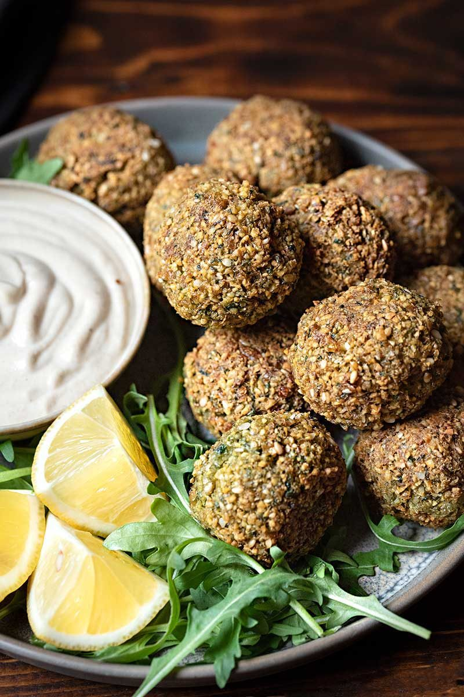
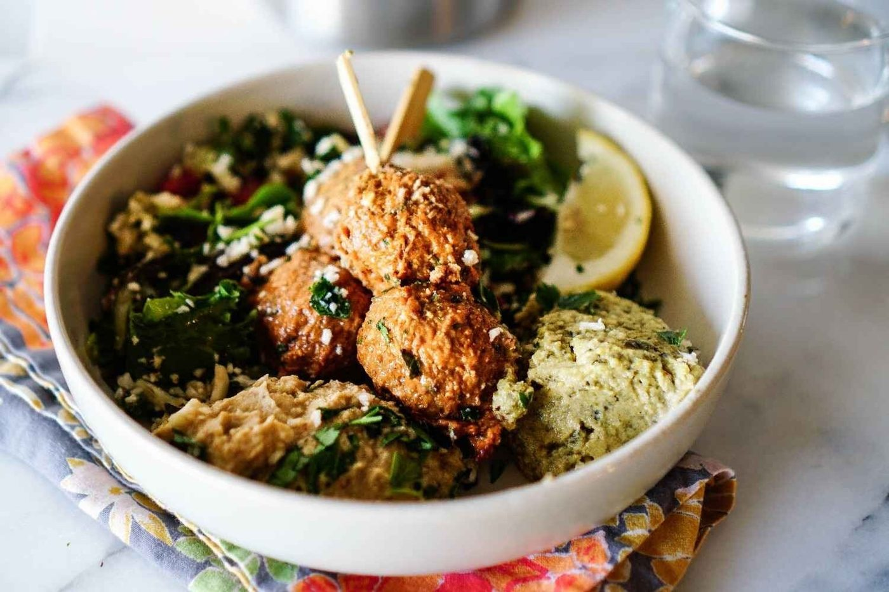
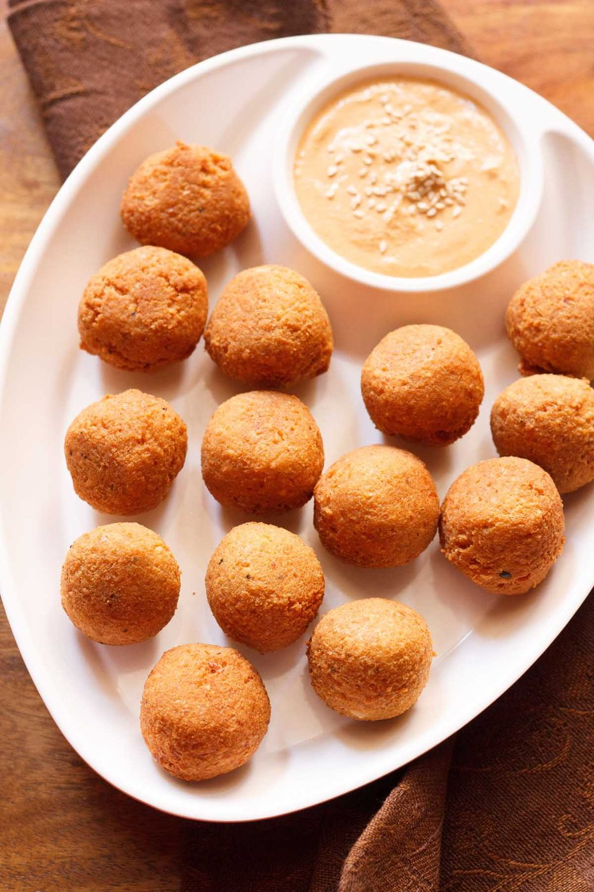

← Spice Route
Falafel with Tahini
Crushed chickpeas and herbs fried to shatter — the street food that convinced the world meat is optional.
Crushed chickpeas and herbs fried to shatter — the street food that convinced the world meat is optional.
The great falafel secret, fought over in Egyptian and Levantine kitchens alike, is that the chickpeas are never cooked. Dried chickpeas soak overnight, then go straight into the food processor raw with herbs, onion and garlic. Raw starch fries into that crisp shell and fluffy interior. Cooked chickpeas make falafel mush — the single most common home failure.
The second secret is a hot, honest fry. Falafel is not health food pretending; it is street food with a job. Fry at 175°C / 350°F until deep mahogany, then let them drain briefly and eat them while the outside still crackles, dunked in tahini sauce loosened with lemon and ice water until it goes white and pourable. Pita, pickles, tomato, amba if you are lucky. Done.
serves 6 — tick items off as you shop; it saves as you go
Soak chickpeas overnight — they triple in size. Drain well. Pulse with onion, herbs, garlic and spices to a coarse, vivid-green rubble that holds when squeezed. Not a smooth hummus — texture is life.
Refrigerate 30 minutes. Cold mix holds together better and fries up less fragile. Stir in baking soda at the last moment — it puffs the interior.
Fry one ball. Too soft? Add 2 tbsp flour or breadcrumbs. Falling apart? The mix is too wet — squeeze in a bit more or blitz in a few more chickpeas. Fix it now, not for the whole batch.
Shape golf balls (or use two spoons for the rustic route). Fry 3-4 minutes to deep brown, in batches, never crowding. Drain on a rack. The color IS the flavor — pale falafel is a missed opportunity.
Whisk tahini with lemon juice and salt — it will seize up alarmingly, then loosen with ice water, spoon by spoon, until it turns pale, pourable and glossy. It should dress a spoon like cream.
Warm pita, smear of tahini, falafel (smash a couple — they hold sauce better broken), tomato, pickles, raw onion. Eat over the counter like someone who knows what is good.







Images are web-sourced via image search and self-hosted. Original sources:
https://z-cdn.chatglm.cn/image-search-mcp/images-ppt/121a9b085fc8.jpghttps://z-cdn.chatglm.cn/image-search-mcp/images-ppt/65a01466932f.jpghttps://z-cdn.chatglm.cn/image-search-mcp/images-ppt/7770612925a3.jpghttps://z-cdn.chatglm.cn/image-search-mcp/images-ppt/c51dd040a48e.jpghttps://z-cdn.chatglm.cn/image-search-mcp/images-ppt/cab426645071.jpghttps://z-cdn.chatglm.cn/image-search-mcp/images-ppt/d5f50693dd8e.jpghttps://z-cdn.chatglm.cn/image-search-mcp/images-ppt/f57e43439ae0.jpgVerified working videos — click a card to load the embed.


Powered by GitHub Issues — the backup kitchen. One issue per recipe; your comment lands in the repo.